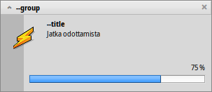

Suomi
Suomi Català
Català Deutsch
Deutsch English
English Español
Español Français
Français Italiano
Italiano Magyar
Magyar Polski
Polski Português
Português Português (Brazil)
Português (Brazil) Română
Română Slovenčina
Slovenčina Svenska
Svenska 中文 ［中文］
中文 ［中文］ Русский
Русский Українська
Українська 日本語
日本語 Haiku-kohtaiset komentorivisovellukset
Haiku-kohtaiset komentorivisovellukset
| Sijainti: | /boot/system/bin/ /boot/system/non-packaged/bin/ ~/config/bin/ ~/config/non-packaged/bin/ |
Kaikki Haikun mukana toimitettavat komentorivisovellukset ovat kansiossa /boot/system/bin. Omat tai ylimääräisinä asennetut komentorivisovellukset voivat olla myös siellä tai kansiossa ~/config/bin, kun ne asennetaan .hpkg-pakkauksesta. Muussa tapauksessa voit laittaa ne kansioon /boot/system/non-packaged/bin/ tai kansioon ~/config/non-packaged/bin/. Kaikki nämä sijainnit ovat PATH-muuttujan osia ja löytyvät siksi automaattisesti.
Seuraava ei ole tyhjentävä luettelo kaikista Haiku-kohtaisista CLI-sovelluksista, se palvelee vain korostamalla muutamaa kaikkein hyödyllisintä antaen sinulle makua komentorivisovelluksista. Rohkaistu itse omalta osaltasi tutkimaan, mitä on bin/ -kansioissa. Sovelluksen suorittaminen parametrillä --help näyttää komennon käytön ja kaikki sen eri valitsimet.
 Attribuutteihin liittyvät sovellukset: listattr, catattr, addattr, rmattr, copyattr
Attribuutteihin liittyvät sovellukset: listattr, catattr, addattr, rmattr, copyattr
Näitä komentoja käytetään näyttämään, lukemaan, lisäämään ja poistamaan tiedostojen attribuutteja. Muista, että nämä metatiedot ovat nykyisin käytettävissä vain BFS-alustetuilla taltioilla. Siirrettäessä tiedostoja toisiin tiedostojärjestelmiin kaikki attribuutit häviävät!
Kaikki nämä komennot on kuvailtu aiheessa Pääteikkunan attribuutit.
Hakemistoihin liittyvät sovellukset: lsindex, mkindex, reindex, rmindex
Näillä komennoilla voit luetteloida, tehdä, indeksoida uudelleen ja poistaa BFS-hakemistojen indeksejä. Jokaisella taltiolla on oma hakemistonsa, muista se kopioidessasi tiedostoja taltiolta toiselle.
Nämä komennot kuvaillaan aiheessa Hakemisto.
Pakkaushallintaan liittyvää: package, pkgman
Komentoa package käytetään hallitsemaan HPKG-pakkauksia. Vilkaise artikkelia Sovellusten asentaminen oppiaksesi perusteet. Tavallisesti käytetään työkalua haikuporter luomaan automaattisesti niin kutsuttua valmistusohjeita (recipes) pakkausten rakentamiseen.
Komentoa pkgman käytetään etsimään, asentamaan, päivittämään ja poistamaan pakkauksia. Pakkaustietovarastoja voidaan lisätä, poistaa tai niiden pakkausluetteloita voidaan päivittää. Erityistyyppinen päivitys kutsutaan parametrillä full-sync: Se on agressiivisempi ja alentaa tai poistaa pakkauksia, jos se on välttämätöntä.
Lisätietoja parametreistä saa lisäämällä ”--help”, esim.: pkgman search --help.
Hyödylliset skriptikomennot
Tässä on muutamia komentorivityökaluja, jotka ovat erityisen hyödyllisiä skriptikäyttöön (katso myös aihetta Bash ja skriptien käyttö).
alert | alert taikoo tyypillisen hälytysikkunan ennalta määritellyllä kuvakkeella, selittävällä tekstillä ja enimmillään kolmella painikkeella. Se palauttaa painetun painikkeen otsikon ja poistumistilan (alkaen numerosta 0). Esimerkiksi, tämä on tehty rivillä: alert --idea "FantasticApp(tm) asennettu onnistuneesti! \ Haluaisitko linkittää sen?" "Työpöydälle" "Työpöytäpalkkiin" "Ei kiitos"
| |
filepanel | filepanel näyttää lataus- ja tallennustiedostopaneelin ja sallii käyttäjän valita tiedoston tai sijainnin. Paluuarvona saat valitun tiedoston tai kansion polun. Käytettävissä on useita parametreja, esimerkiksi aloituskansion asettaminen, ikkunan otsikko, oletusnimi tallennettaessa tai rajoitukset sallituissa tiedostotyypeissä. Tämä on esimerkki filepanel -s -t "Tallenna lokitiedostosi" -d ~/config/settings -n Fantastic.log
| |
hey | hey on pieni aputyökalu, joka lähettää BMessage-viestit sovellukseen ja tulostaa niiden vastauksen. Sitä voidaan käyttää sovellusskriptaukseen, toisin sanoen sovelluksen määritellyin ”kauko-ohjaukseen” skriptistä tai komentoriviltä. Sen käyttö on hiukan mutkikasta... Humdingerin blogikirjoitus palvelee hyvänä esittelynä, ja Scot Hackerin BeOS-raamatussa on perusteellinen hey-oppikurssi, jonka tekijä on Chris Herborth. | |
notify | notify shows a notification panel with a message. There are various parameters that are described when you call notify --help. A notification can also be used to show the progress of some action. When doing that, it's important to set a messageID and always use it when you update the progress (a float between 0.0 and 1.0 that's printed as percent). Otherwise you'll see several notification panels if you update quicker then the set timeout. notify --type progress --group "--group" --title "--title" --icon /boot/home/bebook.hvif \ --messageID MyMessageID --progress .75 "Keep waiting"  | |
query | query on komentoriviversio Etsi-paneelista. Itse asiassa, nopea tapa tuottaa hakutermi on rakentaa kysely Työpöytäpalkin Etsi-paneelissa, vaihtaa valikkoon , lisätä kaksoislainausmerkit (") eteen ja taakse ja liittää koko merkkijono query-komentosi perään Pääteikkunassa tai skriptissäsi. | |
waitfor | waitfor on kiva tapa odottaa tietyn sovelluksen tai säikeen käynnistymistä tai loppumista. |


Muut komennot
checkfs | checkfs on tärkeä työkalu tarkistamaan tiedostojärjestelmäsi virheet. Lisää yksinkertaisesti taltionimi, kuten /Haiku tai laitepolku ja ohjelma käy lävitse jokaisen tiedoston ja korjaa epäyhtenäisyydet siellä missä se on mahdollista. | |
desklink | desklink voi asentaa kuvakkeen mille tahansa tiedostolle, kansiolle, kyselylle tai sovellukselle Työpöytäpalkin tarjottimelle. Se tarjoaa myös mahdollisuuden tiettyjen toimintojen suorittamiseen asiayhteysvalikosta napsauttamalla hiiren kakkospainikkeella kuvaketta. Esimerkkinä, yritä tätä lisäämällä komentorivisovellus screenshot eri valitsimilla (”\\” ensimmäisellä rivillä on vain rivinvaihto Pääteikkunassa): desklink "cmd=Aktivoi ikkuna (2s):/bin/screenshot --window --border --delay 2" \\ "cmd=Poista kopio:desklink --remove=screenshot" /bin/screenshot
| |
diskimage | diskimage sallii sinun rekisteröidä tavallisen tiedoston levylaitteena. Voit esimerkiksi rekisteröidä Haiku anyboot-levyvedoksen, liittää se Seuraajassa ja kopoida, muokata tai poistaa siitä tiedostoja käyttäen sitä Asennusohjelman lähteenä. | |
launch_roster | Taustaprosessi launch_daemon käynnistää kaiken tyyppisiä palveluita ja sovelluksia järjestelmän käynnistyessä. Jotkut niistä se on käskytetty käynnistymään uudelleen, jos ne sulkeutuvat. Jos et halua sitä – ehkä haluat esimerkiksi testata muokattua Seuraajaa – käytä launch_roster-sovellusta pysäyttämään sovelluksen uudelleenkäynnistyminen ennen siitä poistumista. Samalla tavalla voit käynnistää sen uudestaan tai hakea tietoja siitä. Parametri log tulostaa kaikkien launch_daemon-riippuvaisten tapahtumien lokitekstit. launch_roster stop x-vnd.be-tskb | |
mountvolume | Monien mielestä mountvolume on paras liittämään paikalliset levyosiot ja levyasemat, koska sen käyttö on helppoa: kutsu sitä vain levyosion nimellä ja kaikki on tehty. Hae lisätietoja --help valitsimella. mount voi lisäksi liittää etälevyasemia käyttäen verkkotiedostojärjestelmiä, kuten NFS4. Voit määritellä käytettävän tiedostojärjestelmän -t -parametrilla ja etäsijainnin -p -parametrilla. Tiedostojärjestelmäparametrina voit käyttää mitä tahansa, mitä löydät kohteesta /system/add-ons/kernel/file_system (ja tietysti vastaavista tiedostohierarkioista hakemiston ~/config tai "non-packaged" alta). Sinun on myös luotava kansio liitäntäpisteeksi. Tässä on esimerkki: mkdir -p /DiskStation mount -t nfs4 -p "192.168.178.3:volume1" /DiskStation | |
open | open on hyvin kätevä pieni työkalu. Sillä voi avata minkä tahansa tiedoston sen parhaimmaksi katsotulla sovelluksella, tai käynnistää tietyn sovelluksen sen tunnisteen avulla tietämättä sen tarkkaa polkua. Se toimii myös verkko-osoitteiden ja vieläpä "virtuaali"-kansioiden kanssa . nykyiselle kansiolle ja .. äitikansiolle, avaten kansion Seuraajassa. | |
ramdisk | Ramlevy on kuten kiintolevy, jota käytetään vain tietokoneen muistissa. Se tekee siitä hyvin nopean, mutta myös lyhytkestoisen, koska sen sisältö häviää, kun suljet tietokoneen tai se kaatuu tai koet virtakatkoksen. ramdisk create -s 1gb mkfs -q -t bfs /dev/disk/virtual/ram/0/raw RAMses mountvolume RAMses Huomaa: Kun luodaan ramlevy, komento ramdisk tulostaa polun siihen. Jos luot useita levyjä, tuo polku /dev/disk/virtual/ram/0/raw muuttuu! Sisällön säilyttämiseksi, ellei iske mikään tuho kuten virtakatkos, ramlevy voidaan asettaa lukemaan/kirjoittamaan järjestelmäkuva kiintolevylle. Sitä varten sinun on tarjottava halutun kokoinen tiedosto, joka luetaan joka kerta, kun käynnistät ramlevyn, ja kirjoittaa siihen kun irrotat ramlevyn. Luodaksesi 500 mebitavun kokoisen ”RAMimage”-järjestelmäkuvatiedoston ja sen formatoimiseksi tee tämä: dd if=/dev/zero of=RAMimage bs=500M count=1 mkfs -q -t bfs /dev/disk/virtual/ram/0/raw RAMimage Tämän jälkeen käynnistät ramlevyn kuten tämä: ramdisk create RAMimage mountvolume RAMimage On hyvin tärkeää aina irrottaa ramlevy siististi joko Seuraajasta tai Pääteikkunasta komennolla unmount /RAMimage, tai muutokset eivät tallennu takaisin levykuvatiedostoon! |